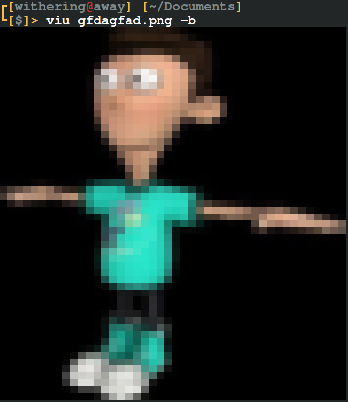

[DEPRECATED]
Please see README.md for more information on the deprecation of this program.
Canvas

What is Viu?
Viu is a command-line application to view images inside the terminal. This small program uses a very clever technique to still display images even when the terminal doesn't support image display.
What is subcharacter-layering?
The way it's able to do this is by using ANSI escape codes along with Half Block characters. Viu uses the Lower Half Block unicode character (U+2584 "▄") with 2 ANSI escape codes.
The program takes the first pixel of the image and sets its color as the background color then takes the pixel color directly below it and sets that as the foreground color.
ANSI takes the Lower Half Block character and sets the background color of it to the top pixel color of the pair. ANSI then takes the foreground color and sets the color of the character to the foreground color which is set to be the bottom pixel color of the pair. Think of it as drawing a rectangle of the top pixel color and drawing a square of the bottom pixel color over it. The rectangle being the background color while the square is the Lower Half Block character.
What is this package I'm developing?
Canvas is a package for go that I am currently developing. This package at the time of writing this provides multiple functions and types to help you implement subcharacter-layering. It provides functions to create canvases, fill canvases, render a canvas, and convert an image to a canvas.
What types of subcharacter-layering does it support? The package is still in it's very early stages of development so it can only use half block subcharacter-layering. I am very excited to add sextant subcharacter-layering which uses sextant blocks (eg. 🬥🬔) which will provide 4 more pixels than half block subcharacter-layering and 6 more than plain 2 character-wide pixels while being thinner.